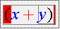

MathML can describe an equation in two ways. Presentation markup describes the way an equation should look, and Content markup describes what an equation means. Ordinarily, editing an equation is a process of getting its appearance to look right, and so by default, WebEQ Editor generates a presentation markup of an equation in progress.
Once you finish your equation, you can have WebEQ Editor apply algorithms to try to infer the mathematical meaning of your equation, and generate a content markup description. To do this,
As a convenience, whenever you click the check syntax button and the current equation passes the check, WebEQ Editor automatically places content markup for the equation on the clipboard using the current export preferences for namespaces.
Two broad problems areas can cause WebEQ Editor's content markup generation algorithms to fail.
To assist in diagnosing these problems, you can check your equation by clicking the check mark button on the far right of the standard toolbar. This will highlight parts of your equation, giving you visual feedback about any problems with the way in which the equation is being interpreted, as illustrated here:

You can toggle back and forth between syntax highlighting and regular display by clicking the check mark button again. Also, starting to edit will revert the equation to normal mode.
If there are obvious problems with your equation, WebEQ Editor will display an error message in the editor status line, and highlight the template where the error was detected in blinking red.
So long as you don't see any errors, WebEQ Editor is generating some content markup encoding of your equation. However, you should always look carefully to be sure that there aren't any subtle errors in the translation, such as extra invisible multiplications.
The colors of symbols in a highlighted expression denote the roles the content generation algorithm thinks they play in your equation. The color codes are as follows:
| Color | Syntactic Role |
| red | operator |
| blue | operand |
| green | function |
Not all equations can be described in equation markup. For example, in presentation markup, it is fine to type "1 + 2 -". This is just a sequence of symbols as far as its appearance is concerned. However, from a mathematical viewpoint, this is an unfinished expression that doesn't have a well-defined meaning.
If you tried to use WebEQ Editor to generate content markup for this equation, it would warn you that it couldn't since the "-" operator expects something to the right of it. You could only generate content markup by completing a mathematically meaningful expression, say "1 + 2 - 3".
See the WebEQ Developers Suite documentation for a fuller discussion of the issues that can arise that prevent proper content markup generation.